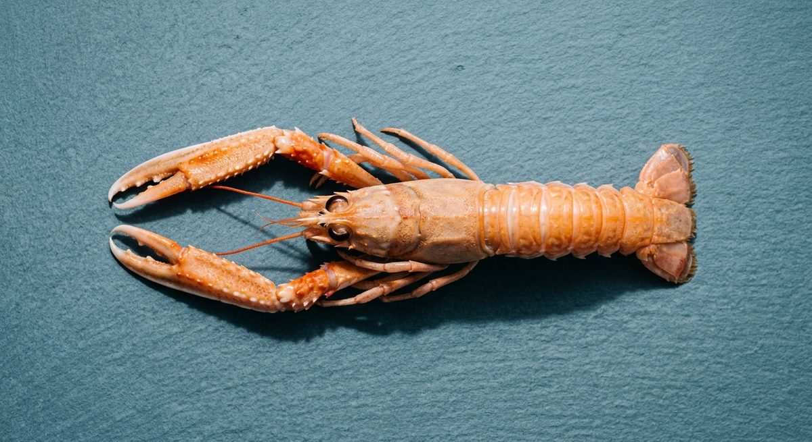
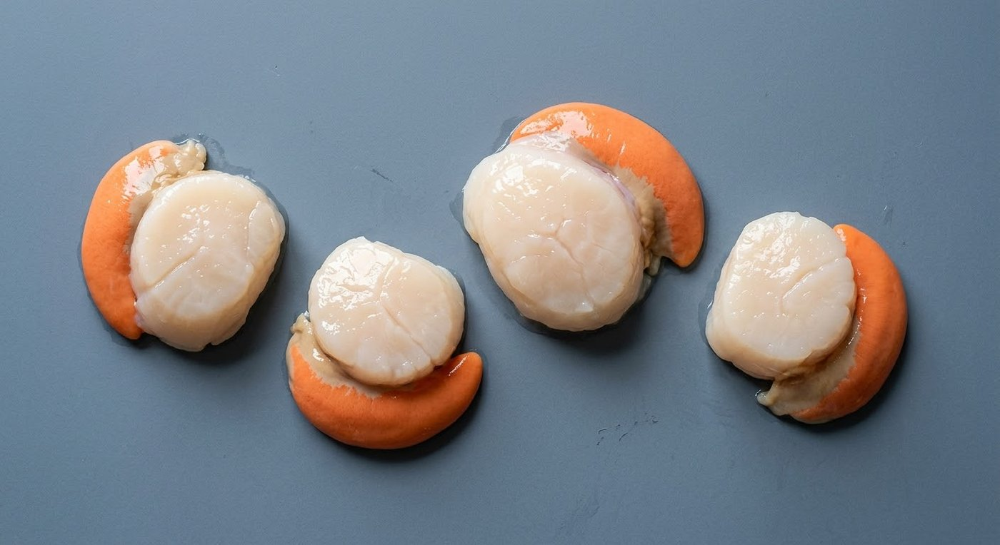
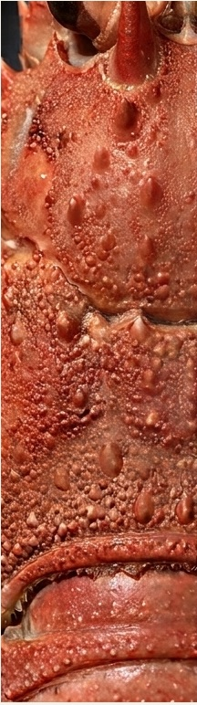
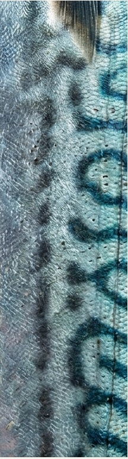
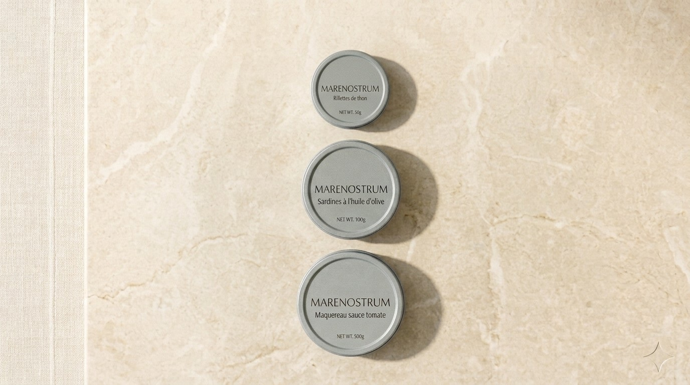
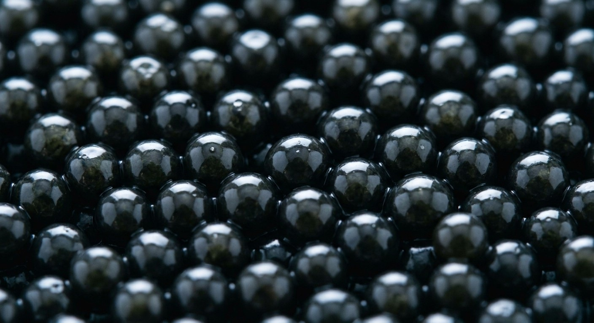

Qui nous sommes
Marenostrum est le négociant sélectionneur des professionnels de la gastronomie. Fondée par Alexandre et Matis Toullec, notre maison va chercher, trie et met à disposition des cuisines professionnelles les produits de la mer les plus exigeants — du volume quotidien à la pièce la plus rare.


Sélection, négoce, export
Sélection
Nous ne proposons rien que nous n'ayons goûté, comparé et jugé digne d'une carte professionnelle.
Négoce
Nous achetons, stockons et distribuons en direct, sans intermédiaire superflu entre le producteur et votre cuisine.
Export
Nous développons l'accès à nos produits au-delà de la France, pour accompagner les maisons qui exportent ou s'installent à l'international.
NOS GAMMES

Crustacés

Poissons nobles

L'épicerie

CaviarProchainement
Du quotidien à l'exception, toujours choisi avec la même exigence.
Nos convictions
Parce qu'un chef ou un acheteur professionnel ne devrait jamais avoir à se contenter de ce qui est disponible. Parce que la meilleure pièce mérite d'être cherchée, pas seulement vendue. Marenostrum existe pour que l'exigence d'une cuisine professionnelle ne s'arrête jamais à ce qu'un catalogue peut offrir.
Photo — convictions
Photo — image de clôture